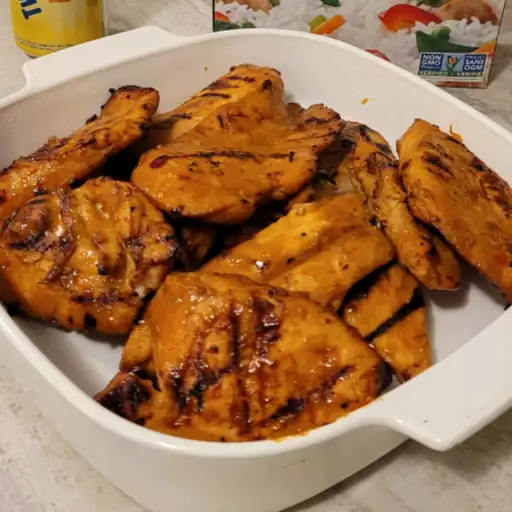

Recipe for grilled chicken

Grilled chicken. Healthy, low in calories, high in protein, and tasty. Need I say more?
Enjoy the recipe below!
Recipe on the website.
Ingredients
- ⅓ cup soy sauce
- ⅓ cup brown sugar
- 2 tablespoons lime juice
- 2 tablespoons orange juice
- 1 tablespoon Thai-style sweet chili sauce
- 1 teaspoon chile-garlic sauce (such as Sriracha®)
- 3 cloves garlic, minced
- ¼ teaspoon curry powder
- 4 skinless, boneless chicken thighs
Steps
- Place the soy sauce, brown sugar, lime juice, orange juice, sweet chili sauce, chili-garlic sauce, garlic, and curry powder in a large plastic zipper bag. Seal and knead the bag with your fingers to mix all the ingredients and dissolve the sugar. Place the chicken thighs into the marinade, squeeze out the air from the bag, zip the bag closed, and refrigerate for 4 hours or overnight.
- Preheat an outdoor grill for medium-low heat; lightly oil the grate.
- Remove the chicken from the bag, pour the excess marinade into a small saucepan, and bring to a full boil for about 1 minute to sterilize the marinade.
- Grill the chicken thighs until they are no longer pink in the middle and show grill marks, about 25 minutes, basting them generously with the sterilized marinade as they grill.